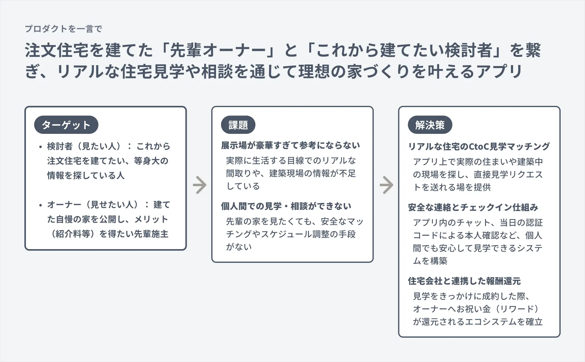
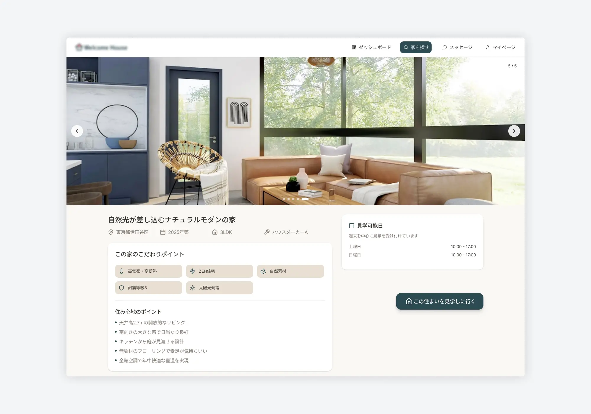
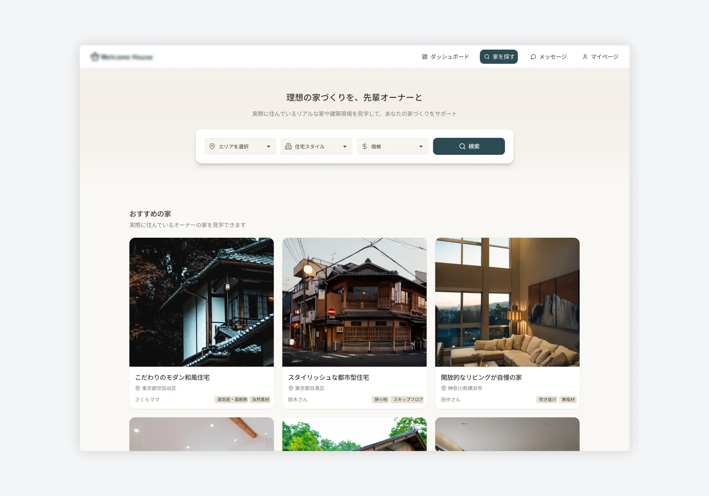
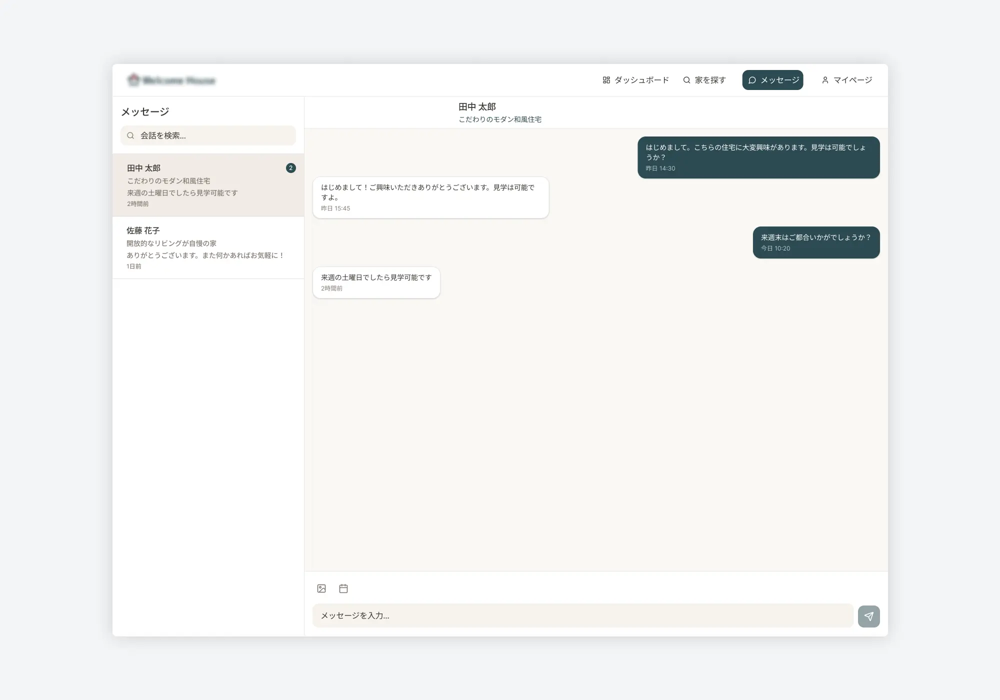
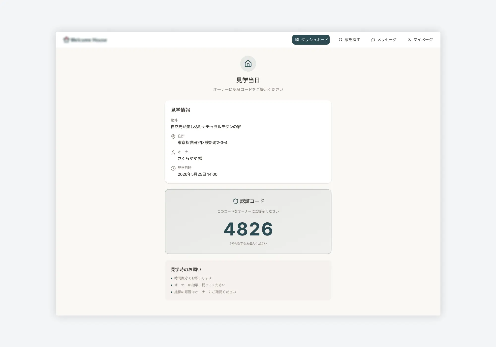

CtoC住宅見学アプリ
- Webアプリ
- 実務案件

注文住宅を建てた「先輩オーナー」と「これから建てたい検討者」を直接繋ぎ、リアルな住宅見学や相談を通じて、理想の家づくりを叶えるCtoC住宅見学アプリの開発に、デザイナーとして携わりました。
- カテゴリー：Webアプリケーション
- 制作種別：実務案件
- 担当領域：ユーザーインタビュー、情報設計、ビジュアルデザイン
- 使用ツール・言語等：Figma, Rails, Ruby, Sass, Docker等
- 参画期間：4ヶ月
どんなプロダクトか
本プロダクトは、モデルハウスではなく、実際に人が住んでいる注文住宅や建築現場をアプリ上で見学・相談できるCtoCプラットフォームです。 検討者には等身大の情報収集の場を、オーナーにはマイホームの公開による報酬を還元し、工務店やハウスメーカーを巻き込んだ新しい住宅購入の形を実現するサービスです。

プロジェクト概要
自社開発における新規プロダクトの立ち上げプロジェクト。PM1名、エンジニア数名、デザイナー1名（自身）という、少数精鋭のミニマムなチーム体制で開発が進行しました。 ビジネス目標や大枠のコンセプトが定まった段階でプロジェクトへ参画。唯一のデザイナーとして、具体的な機能要件の定義や、詳細な仕様の落とし込みといった工程から関わりました。
担当範囲
- リサーチ・ヒアリング：具体的な要件を詰めるため、対象となる各ロール（オーナー・ビジター）へヒアリングを実施し、ユーザーが抱える潜在的なペインやニーズを把握
- 要件定義（一部）：大枠の要件を、実際の画面仕様やユーザーフローへと具体化するプロセスへのコミット
- 情報設計：マッチングやスケジュール調整といった複雑な機能の画面遷移、レイアウトの設計
- ビジュアルデザイン：トンマナの定義やデザインの精緻化、UIコンポーネントの構築
最終成果物（一部）







デザインのプロセス
デザインは以下のプロセスで進めました。
- 大枠の要件や戦略把握
- ユーザーインタビュー
- 要件定義
- 情報設計・プロトタイピング
- 検証・改善
- ビジュアルデザイン
要件把握
本プロジェクトには、プロダクトの構想やターゲットペルソナ、目指すべきゴールといった「戦略部分」が定義された段階からデザイナーとして参画しました。
対象プロダクトは、理想の注文住宅を披露したいオーナーと、モデルハウスではなく実際の居住空間を参考にしたいビジターをマッチングするCtoCサービスです。 オーナーには家を見せるインセンティブとして運営から金銭的メリットを提供し、ビジターには理想の注文住宅購入を実現してもらうという全体方針やターゲット像（5年以内に建築したオーナー / 2年以内に購入検討中のビジター）は定められていたものの、「具体的にどのような機能やプロセスで実現するか」という詳細な要件定義はこれからのフェーズでした。
参画初期においては、まず既に決まっていた戦略やペルソナの解像度を正しくキャッチアップすることに注力しました。そのうえで、個人宅に人を招き入れるCtoCサービス特有のリスクやプライバシー面の制約、ユーザー双方の心理的ハードルといった課題感をチーム内で共有し、目線を揃えました。
こうしてプロダクトの全体像と制約を深く理解したうえで、曖昧な要件を具体的な機能やUIへ落とし込むための次ステップとして、ターゲットユーザーへの詳細なインタビュー調査へと進みました。
ユーザーインタビュー
対象者として、現在注文住宅を検討中のビジター側のユーザーと、5年以内に注文住宅を建てて現在その家に住んでいるオーナー側のユーザーを各3〜4名選定し、1対1のオンラインインタビューを行いました。 ビジターに対しては既存のモデルハウスで不満に感じたことや本当に知りたかった情報を聞き出し、オーナーに対しては見ず知らずの人を自宅に招く際の心理的ハードルや許容できる情報開示の範囲を半構造化インタビューによって掘り下げました。
インタビューの結果、ビジター側からはモデルハウスの完璧な空間ではなく「生活動線や収納の実際の使い心地」「居住後に分かったデメリット」「表に出てこないリアルな建築費用や付随費用」といった表に出てこない一次情報を知りたいという強いニーズが明らかになりました。 一方、オーナー側は自宅の披露やインセンティブに対する意欲はあるものの、「見知らぬ人を自宅に招くことへの防犯・プライバシー上の懸念」が最大のペインとなっていることがわかりました。 特に、事前に相手の身元や属性（単身か家族連れかなど）が見えない状態での申請受諾に強い抵抗感があることが特定されました。
調査で浮き彫りになった課題を受け、プロダクトの最優先要件を「オーナーの不安を払拭する安心感の設計」と設定しました。 ビジネス側のインセンティブ設計と並行し、プロダクト側では厳格な本人確認機能の導入、顔写真や属性情報を適切に開示するプロフィール機能の拡充、および見学申請から承認に至る厳密なステップ設計を要件として定義し、双方が納得感を持って利用できる仕組みへと落とし込みました。
情報設計
インタビューで判明したニーズやペインに基づき、ユーザーの行動文脈、セキュリティ、ビジネス実現性など多様な観点を交えながら、プロダクト全体の情報構造（操作フロー・画面レイアウト・情報階層）を再構築しました。
具体的には、両者の感情変化や発生し得る様々なユースケースを想定し、全体としてのカスタマージャーニーや詳細なタスクフローを整理しました。 例えば、特に繊細な設計が求められた「見学申請から承認に至るプロセス」においては、効率的なマッチングのみを追求するのではなく、申請受諾の判断材料となる情報（顔写真、家族構成、家づくりの検討状況など）がどのタイミングでどのように開示されればオーナーが心理的負担なく「承認」を行えるかといった、安心感を担保するためのステップ設計や状態遷移を重点的に定義しました
続いて、整理した全体構造を画面レイアウトへ昇華させるため、コンテンツの優先順位付けや画面間の遷移関係を設計しました。 ここでも様々な画面のレイアウト検討を行いましたが、例えばビジター向けの物件詳細画面においては、一般的な不動産スペック情報だけでなく、インタビューで要求が高かった「リアルな光熱費」や「実際に住んで分かった生活動線のデメリット」といった一次情報がファーストビュー付近で視覚的に際立つよう、情報のグラデーションや配置を工夫しました。 同時に、プライバシーを保護しつつ信頼性を提示できるよう、本人確認済みバッジや同行者情報のステータス表示など、安全性を直感的に伝えるUIコンポーネントを適切に配しました。
プロトタイピング、検証・改善
プロトタイプ作成後は、実際の利用シーンや実データを想定したユーザーテストおよびチーム内でのプロトタイプ検証を実施しました。 画面の見た目や単一の操作チェックにとどまらず、ユーザーが実際の心理状況下で迷いなくタスクを完了できるか、安全面や信頼性に違和感がないかを多角的な視点から検証し、数多くの細かな改善点を抽出・修正していきました。
例えば、代表的な改善点として「見学申請時の心理的ハードル」に関する課題が浮き彫りになりました。 当初のプロトタイプでは、ビジターが日程を選んで即座に申請を送信するシンプルなフローにしていましたが、テストにおいて「見ず知らずのオーナーにいきなり申請を送るのは、どんな人が来るか警戒されそうで躊躇する」という声が聞かれました。 これに対し、申請ボタンの前に「オーナーへの事前の挨拶・質問メッセージ（テンプレ付き）」を入力させるステップを挟むインターフェースへ改修しました。 これにより、一見するとステップ数は増えるものの、双方の心理的距離を縮め、より安心して申請へ踏み込める体験へとブラッシュアップしました。
このように、単なる操作性の向上にとどまらず、CtoCサービス特有の「ユーザー同士の心理的安全性」や「運用上の不安」に踏み込んだ検証と改善を反復的に重ねることで、プロダクト全体の完成度を高めていきました。
ビジュアルデザイン
ビジュアルデザインにおいては、プロトタイプ検証の段階で「個人宅を訪問し合う」というCtoCサービスの特性に合わせ、世界観の軸となる「安心感」「清潔感」「信頼性」を表現した大まかなトーン＆マナーを先行して策定・適用していました。これにより、検証時にもユーザーが実際のサービス利用時に近い感覚で印象や心理的ハードルを評価できるように配慮しました。
その後、検証を経た段階で、ビジュアル表現の本格的な精緻化へと着手しました。 カラーパレットには、温かみのある住まいを想起させるベージュと、誠実でクリーンな印象を与える深みのあるグリーンをベースとして採用し、視覚的なプライオリティに基づいた色の役割整理を行いました。 また、フォントサイズやコンポーネントの角丸にはマイルドな丸みを持たせることで、モダンな洗練さと親しみやすさが両立するデザインスタイルへと磨き上げました。
振り返り
デザイナーが自分1名という環境のなか、ただ画面を作るだけでなく、ビジネス要件をいかに破綻なくUIに落とし込むかを常に意識していました。 特に「新築住宅の購入に向けた見学」や「自宅を他人に公開するオーナーの心理」は、自分自身に経験がなく、当初は直感的なニーズやペインが最もイメージしづらい領域でした。 だからこそ、自分の思い込みや主観に決して頼らず、ユーザーリサーチから得られた客観的なデータや生の声に徹底的に耳を傾け、事実に基づいた画面設計にあたることを強く意識しました。
本プロダクトは、家を見せたい「オーナー」と、見たい「ビジター」という全く異なる2つのロールが交錯するCtoCサービスです。 お互いの心理的ハードルを下げながら、個人間でも迷わずに、かつ「安全に」タスク（見学予約や当日認証）を完了できるシンプルな体験設計には苦労しましたが、未知のドメインであってもロジカルなリサーチと丁寧な情報設計を踏むことで、ユーザーに寄り添った本質的なUIを提供できるという大きな学びを得たプロジェクトです。